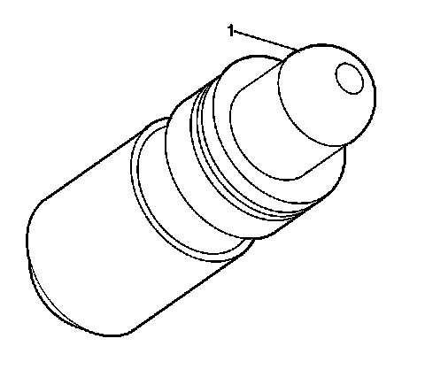

Valve Lifter Replacement - Right Side
Valve Lifter Replacement - Right Side
Removal Procedure
1. Remove the right valve rocker arms. Refer to Valve Rocker Arm Replacement - Right Side (Valve Rocker Arm Replacement - Right Side) .

Important: Ensure each camshaft follower remains matched to the original stationary hydraulic lash adjuster (SHLA) and original location the components were assembled in.
2. Remove the SHLA from the right cylinder head bores.
3. Clean and inspect the valve lifters. Refer to Valve Lifters Cleaning and Inspection (Overhaul) .
Installation Procedure
1. Ensure the crankshaft is in the top dead center (TDC) position for the number one cylinder.

Notice: Refer to Valve Lifter Priming Notice (Valve Lifter Priming Notice) .
2. Fill the SHLA with clean engine oil. Refer to Sealers, Adhesives, and Lubricants (Specifications) for the correct part number. Take precautions to prevent scratching the pivot sphere area (1) of the SHLA.
3. Lubricate the SHLA bores of the cylinder head with clean engine oil. Refer to Sealers, Adhesives, and Lubricants (Specifications) for the correct part number.
4. Install the SHLA into the bores.
5. Install the right valve rocker arms. Refer to Valve Rocker Arm Replacement - Right Side (Valve Rocker Arm Replacement - Right Side) .